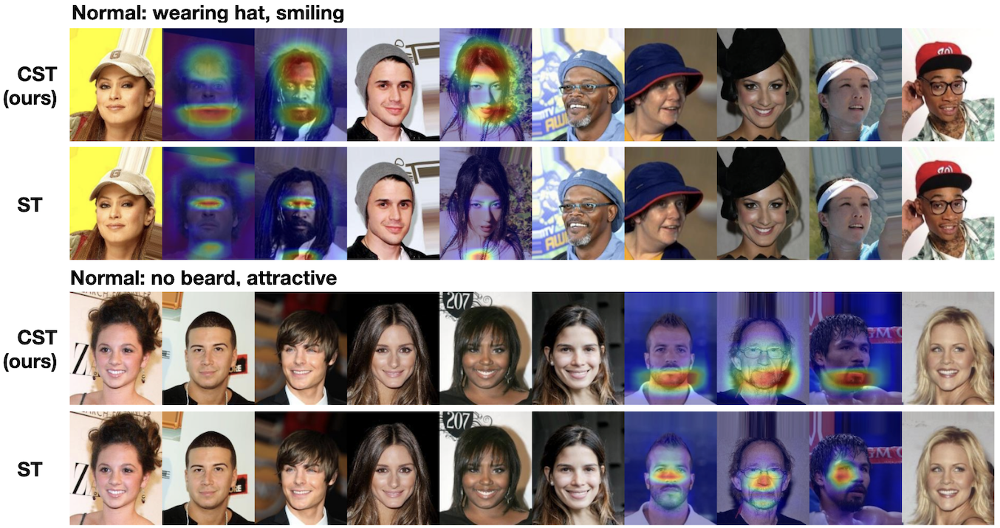

Researcher · Artificial Intelligence
I am currently completing an MSc in Artificial Intelligence at Bocconi University. Beginning in October, I will join Ylli Doksani’s lab at the AIRC Institute of Molecular Oncology (IFOM) as a Research Fellow, where I will develop computer vision and AI solutions to automate the analysis of microscopy images. I am also part of the Computational Biology group led by Prof. Francesca Buffa at Bocconi, and I am conducting my master’s thesis on Convolutional Set Transformers—a novel neural architecture we introduced here—under the supervision of Prof. Giacomo Boracchi (Politecnico di Milano). My research interests focus on deep learning architectures and methods, with particular emphasis on applications in computer vision and bioinformatics.
We introduce a novel neural architecture designed to process image sets of arbitrary cardinality that are visually heterogeneous yet share high-level semantics (such as a common category, scene, or concept).
This package, available on PyPI, provides the reference implementation of the Convolutional Set Transformer. It includes reusable Keras 3 layers for building CST architectures, and provides an easy interface to load and use the CST-15 model pre-trained on ImageNet.
Set Anomaly Detection is a binary classification task meant to identify images in a set that are anomalous or inconsistent with the majority of the set. Here, the notion of anomaly is relative: the same image may be considered anomalous in one set but not in another, depending on the surrounding context. The Figure below shows two image sets derived from the CelebA dataset (Liu et al., 2015). In each set, a majority of normal images share two attributes ("wearing hat" and "smiling" in the first, "no beard" and "attractive" in the second), while a minority lack these attributes and are thus anomalous. After training a CST and a Set Trasnsformer (Lee et al., 2019) on CelebA for Set Anomaly Detection, we evaluate the explainability of their predictions by overlaying Grad-CAMs on anomalous images. CST explanations correctly highlight the anomalous regions, whereas ST explanations fail to provide meaningful insights. For more details see Chinello & Boracchi (2025).
The Figure below presents a qualitative comparison of Grad-CAMs generated for our CST-15 model (28M params), ConvNeXt-XL (350M params), ResNet50 (26M params), and VGG-19 (144M params). To ensure a fair comparison, we feed isolated images without context to CST-15. Explanations are computed with respect to the ground truth class. CST-15 Grad-CAMs are more precise and focused compared to ResNet50 and VGG-19, and comparable or even better than ConvNeXt-XL explanations. Consider, for instance, the first image (first row in the Figure below). It depicts a space shuttle being transported by a shuttle carrier aircraft. Even to the human eye, it is difficult to distinguish the shuttle from the carrier aircraft. However, the CST-15 explanation map accurately identifies the space shuttle, distinguishing it from the aircraft. In contrast, the Grad-CAMs generated for the other models are significantly less precise, highlighting a coarse region that encompasses both the shuttle and the carrier aircraft. For more details see Chinello & Boracchi (2025).